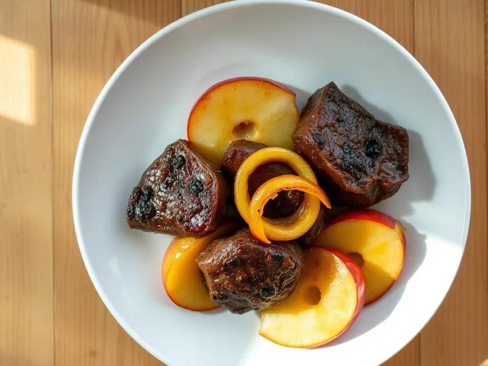

Куриная печень с яблоками и луком
Обжаренная печень с карамелизованным луком и кислыми яблоками по-берлински
25 мин3 порц.438 ккал на порциюБ 34 · Ж 23 · У 24Европейская кухня
Открыть в приложении: порции, таймеры, список покупок
Продукты на 3 порц.
- Куриная печень500 г
- Яблоки2 шт
- Лук репчатый2 шт
- Мука пшеничная1 ст. л.
- Сливочное масло20 г
- Растительное масло1,5 ст. л.
- Сахар1 ч. л.
- Соль0,5 ч. л.
- Перец чёрный молотый2 щеп.
Как готовить
- Очистите печень от плёнок и протоков, промокните салфеткой. Лук нарежьте полукольцами, яблоки без сердцевины - дольками. Это 6 минут.
- На половине масел обжарьте лук на среднем огне 6-7 минут до мягкости и золотистого цвета. Добавьте яблоки и сахар, жарьте ещё 3 минуты, пока дольки не станут мягкими, но не развалятся. Переложите на тарелку.
- Обваляйте печень в муке. Разогрейте оставшееся масло на сильном огне.
- Обжарьте печень по 2-3 минуты с каждой стороны до румяной корочки. Посолите и поперчите только в конце.
- Верните лук с яблоками, прогрейте 1 минуту. Готово, когда на разрезе печень светло-розовая, без крови.
Совет. Солите печень только в конце жарки: с солью в начале она становится жёсткой. Берите кислые яблоки вроде антоновки или семеренко.